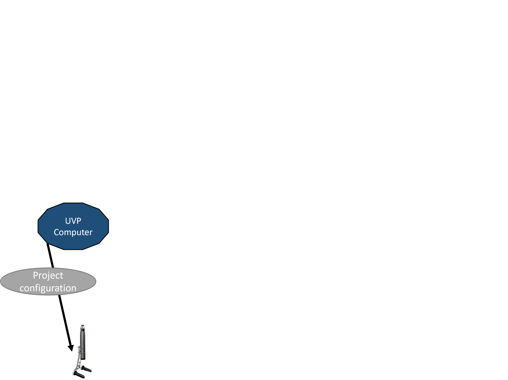
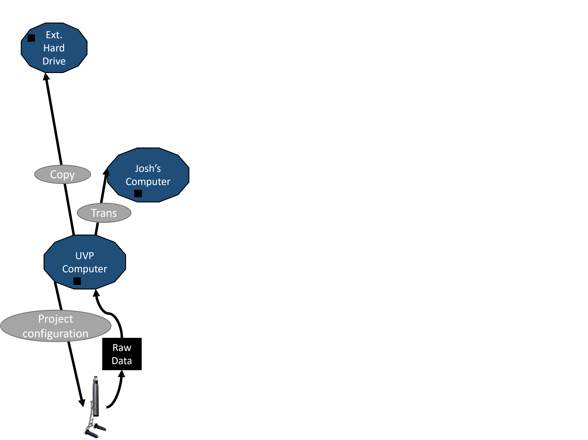
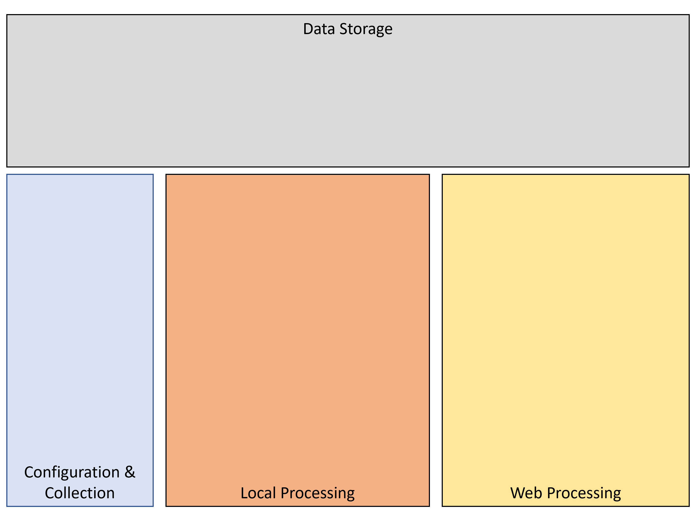
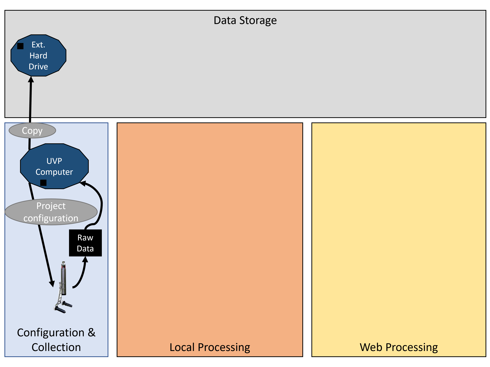

UVP Data Management Plan
Alex Barth
Currently, there is no coherent data plan. This results in a mess of data storage and access issues.
Click down to see our current pathways
A project gets set-up. With variable formats
Then the UVP collects raw data

This data gets backed up and transferred.
Data are again backed-up and sent to processing

Meta-data and processing generates new files.
However, the pathway to this point can be variable.
This results in inconsistent, messy data.
Regardless of transfer pathway, once processed, data are sent to LoV Server.

Importing creates two, related projects.

Validated vignettes are accessible in ecopart

Exported data are then sent somewhere to be analyzed or saved.
This is a mess!
Ultimately, we end up with useless (not safe) redundancy and difficulty tracking projects. We need a new method. It must store data safely but also be consistent and comprehenable to ourselves.
A new way forward:
By laying out a clear data management procedures, we can create a robust system. We'll spend less time checking back over old notes, less time explaining to new students, and more time being biologists!
Click down to see the plan:
UVP data management is 4 fundamental categories:
Project configuration:
Pre-Process transfer:
Local Processing:
Post-processing transfer:

Web-Processing:

Web-Processing:

Final Products:

Final Plan:
Data will be accessible through the hub
No long term data storage on the LoV server or processing computer